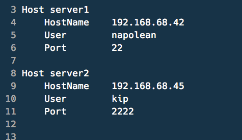

Command line for the Drupaler
A shell is a user interface for access to an operating system's services.
Text command lines
Light on Resources
Concise
Scriptable for Automation
Commands are not obvious
Not beginner friendly

"I have never regretted learning to use a command line tool."
~ Me
PHP
Github
MySQL
Drupal
Grunt
Sass
Publisher
Lead Architect
Make your computer work in the way you want it to.
Configuration files.
Begin with a .
Live in ~
Symlink to a single directory
Track in Git
You can take your customizations with you.
Look at other dotfiles and steal liberally
Add small bits at a time and learn how to use them
A Symbolic link is any file that contains a reference to another file or directory in the form of an absolute or relative path.
ln -s source_file target_file Bash:
the GNU Project's shell and is what I use.
ZSH:
a shell designed for interactive use, although it is also a powerful scripting language
Fish:
a smart and user-friendly command line shell for OS X, Linux, and the rest of the family.
Add things to your path
Shortcuts to commands.
alias a='ls -A'
alias la="ls -A -l -G"
alias c='clear'
alias l.='ls -d .[^.]*'
alias l='ls -lhGt'
function take() {
mkdir -p "$1"
cd "$1"
}
Secure Socket Shell
Save yourself from trying to remember IP addresses and port numbers
Don't put sensitve info in your Git repo if you plan to make it public.
Don't use a GUI
Learn to use the commands
vim ~/.gitconfig


Per machine: ~/.gitconfig
Per project: .gitignore file in the repository
Per repo: .git/info/excludes
.git/hooks
Code linting.
Do tasks like copy your commit message to your clipboard?
#!/bin/bash
# Create dayone entry with last commit message
git log --pretty=format:"%s @${PWD##*/}%n%b" -1 HEAD | dayone new
# Copy last commit message copied to clipboard
git log --pretty=format:"%s %n%b" -1 HEAD | pbcopy
In your ~/.gitconfig
[alias]
init = init --template ~/.git_template
[init]
templatedir = ~/.git_template
A good tutorial for setting this up. Logging Git commits with doing
Text-mode interface for git http://jonas.nitro.dk/tig/
A more basic tool, vcprompt.


I plan on coding for many years.
Netbeans
Smultron
BBEdit
Coda
Textmate
SublimeText 2
PHPStorm
I plan on coding for many years.
Visual block
A Git wrapper so awesome, it should be illegal.
Make Vim pretty and more useful. Lean & mean status/tabline for vim that's light as air.

Download and enable modules
Backup and import databases
Run updates
Watch logs
Log in as any user